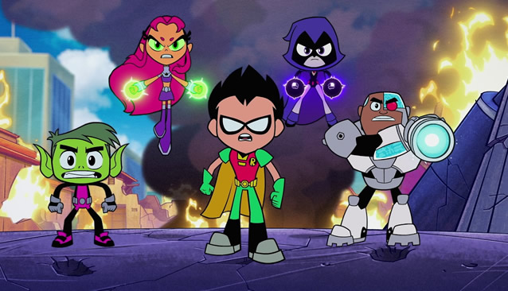
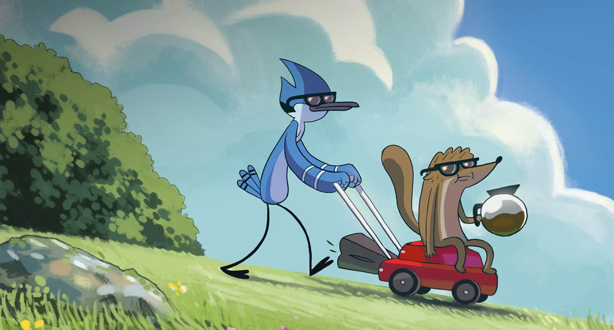
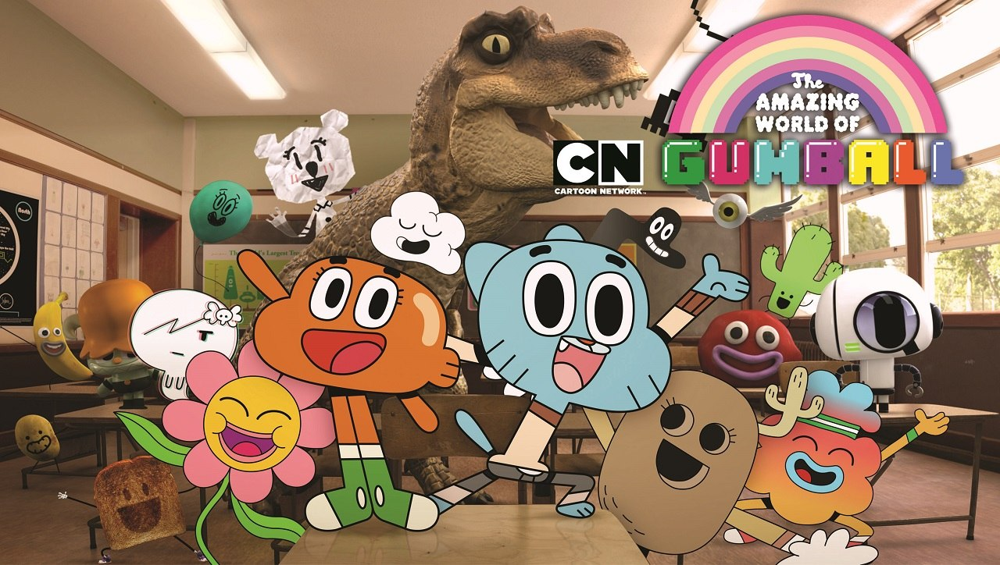
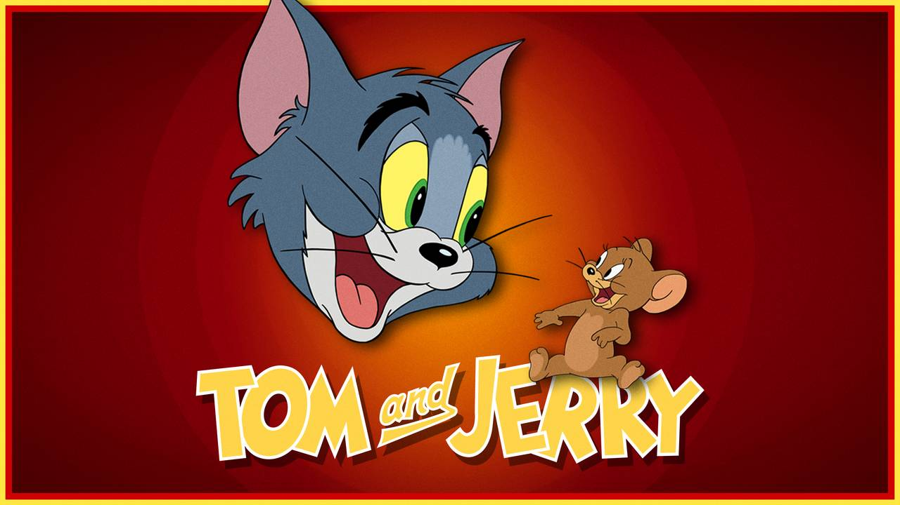
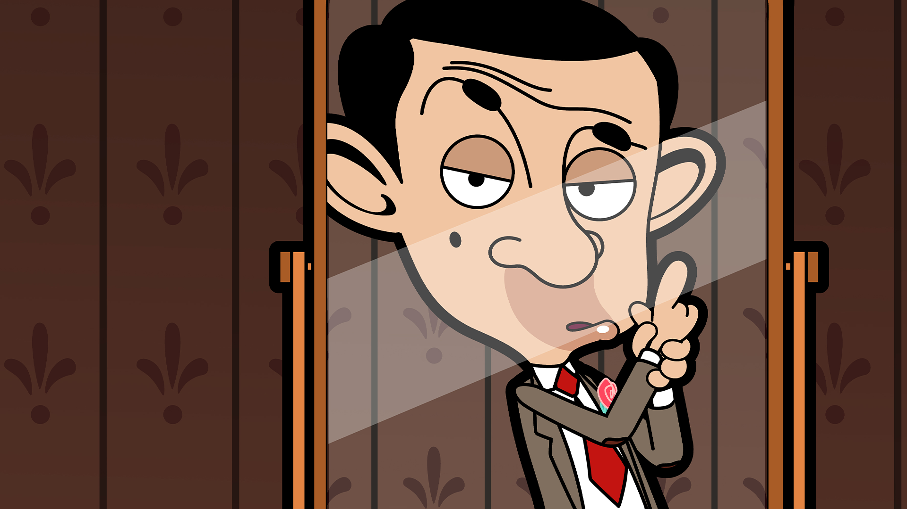
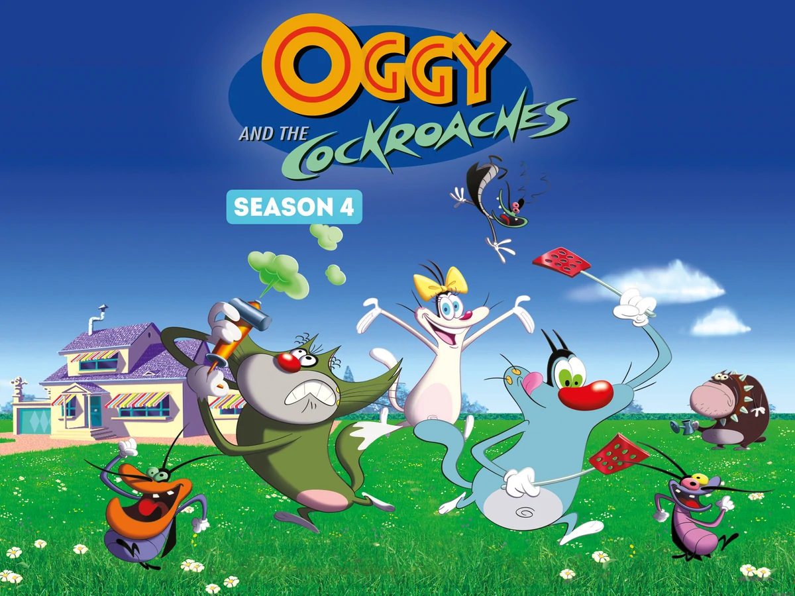
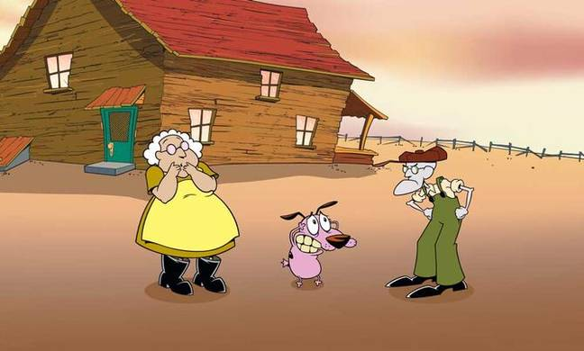
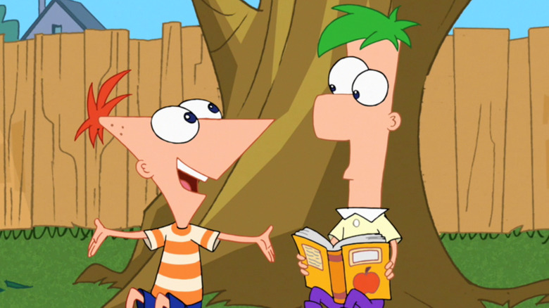
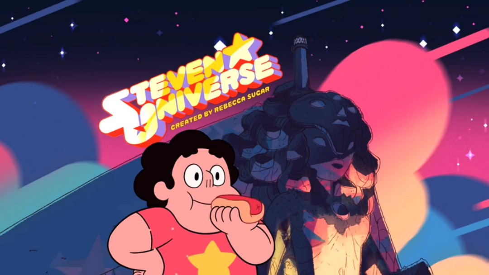

Top 1
Teen Titans Go!
Teen Titans Go! is an animated series that follows the adventures of the young Titans: Beast Boy, Robin, Cyborg, Raven and Starfire. They reside in Jump City when they are not saving the world while living together as teenagers without adults who disrupt the young Titans.
Top 2

Adventure Time
Adventure Time is an American fantasy animated television series created by Pendleton Ward for Cartoon Network. The series follows the adventures of a boy named Finn and his best friend and adoptive brother Jake a dog with the magical power to change size and shape at will.
Top 3
Regular Show
The series revolves around the daily lives of two 23-year-old friends, Mordecai (a blue jay), and Rigby (a raccoon). They work as groundskeepers at a park, and spend their days trying to avoid work and entertain themselves by any means.
Top 4
The Amazing World of Gumball
The misadventures of Gumball, a twelve-year-old cat. With the help of his best friend Darwin, his former pet goldfish that grew legs and joined the family, he gets into all sorts of antics. He is joined by his sister, Anais, a four-year-old bunny with heightened intelligence.
Top 5
Tom and Jerry
Tom and Jerry is an American cartoon series about a hapless cat's never-ending pursuit of a clever mouse. Tom is the scheming cat, and Jerry is the spunky mouse. The series was driven entirely by action and visual humour; the characters almost never spoke.
Top 6
Mr. Bean
Bean is the main protagonist in the comedy series of the same name. He is a slow-witted, sometimes ingenious, selfish, and generally likable buffoon who brings various unusual schemes and connivance to everyday tasks.
Top 7
Oggy and the Cockroaches
Oggy, an anthropomorphic cat, would prefer to spend his days watching television and eating, but is continuously pestered by three roaches: Joey, Marky and Dee Dee.
Top 8
Courage the Cowardly Dog Show
An anthropomorphic dog who lives with an elderly couple in a farmhouse in the middle of "Nowhere". In each episode, the trio is thrown into bizarre, frequently disturbing, and often paranormal or supernatural-type misadventures. The series is known for its dark, surreal humor and atmosphere.
Top 9
Phineas and Ferb
Two stepbrothers who find inventive things to do on each day of their summer vacation, such as building a roller coaster out of materials you would find in your everyday home like Popsicle sticks, indoor plumbing, et cetera.
Top 10
Steven Universe
Steven Universe is set in the fictional town of Beach City, Delmarva, where the Crystal Gems live in an ancient beachside temple and protect humanity from monsters and other threats.